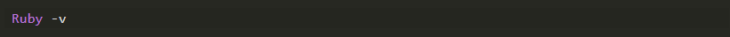
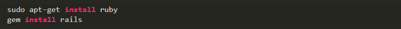
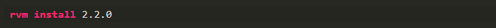
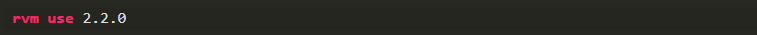
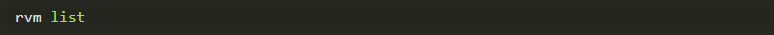
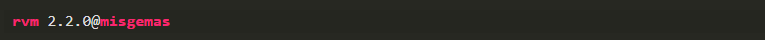
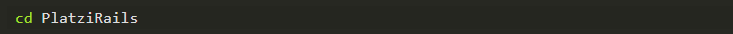
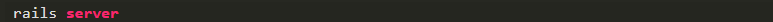

Introducción a Ruby on Rails first steps
Ruby is a programming language created thinking about the happiness of the developers, Ruby uses a very clean and easy to read syntax even for those who do not know how to program it, allowing the developer to pour all their energy into the logic of their program. Ruby On Rails, is an MVC framework for the development of web applications in Ruby, which was created with the intention of maintaining the essence of Ruby, that is, thinking about the happiness of all those who use it.
Ruby on Rails at begining
There are two premises or basic principles that we must understand when programming with Ruby on Rails.
Do not Repeat Yourself (DRY): this programming paradigm is not exclusive to Rails, and consists of developing our applications by modularizing as much as possible to facilitate the reuse of the code without repetitions that cause confusion and complicate the maintenance of our code.
Convention on configuration: Rails is designed with preconfigured instructions, it depends on the developer if he executes them that way or if he modifies them according to the needs of each project.
Installation
Ruby is a multiplatform language, very easy to install and use in almost all existing operating systems, even compiling its source code, directly. Therefore, Rails is also cross-platform, and equally easy to install. To install Rails we must first make sure that we have a Ruby version installed. We can do it with the following command from a terminal:
To install Rails in Windows, there is the Rails installer tool. It is not complicated to use, however it is recommended to avoid building both productive and development environments, for Rails, on Windows (the new gods and the old ones will know why), and if you are using Windows, do not be discouraged, you can use a machine virtual with any Linux distribution. In Linux, we can install both Ruby and Rails, from the package managers and they will be installed directly in our system. -Install the most recent version of Ruby and Rails.
However, the direct installation of both is not recommended, since we can fall into errors when updating, or when we want to test with a new version and then go back to working on a previously developed application, we would have to uninstall one and install another, losing time. To solve this type of problems, the community created alternatives, there are several, but the most popular and most comfortable to use is RVM, Ruby Version Manager. -Install RVM \ curl -sSL https://get.rvm.io | bash -s stable --ruby --rails Once RVM is installed, it will allow us to install / choose the version of Ruby and Rails that we want to use in each project.
We can also configure our Gemsets, or groups of gems, gems is the way they are called in Ruby bookstores. The Gemsets that we install will be available to be reused in different projects. It is also a good idea to use RVM in production environments, even if we only have one Gemset, since it facilitates the upgrade / downgrade of the Ruby and Rails versions. -We install Ruby versions in the following way (2.2.0 -> is the Ruby version number):
We tell RVM which version of Ruby we want to use:
List the different versions of Ruby that we have:
We can do a lot of things with RVM, such as configuring a Ruby version by default, or tell RVM that we want to use the Ruby installed directly on the machine, all the documentation about it is found on the RVM official site. -We believe our Gemset, we will call it 'misgemas':
We tell RVM that we will work with this Gemset:
As Rails behaves like a gem for its installation, now we can install the version that we want Rails inside our Gemset, in this way: gem install rails -v 4.1.0
We can have as many Gemsets as we have projects, and we can list them with the following command:
rvm gemset list_all Once we are comfortable with the Ruby version and the gemset we want to use, we proceed to create our first app in Rails.
We make sure that all the gems that Rails uses are installed, with the following command: bundle install.
Now if we are ready to create our application, we run the following command: rails new PlatziRails (example).
This creates a folder with the same name -PlatziRails- within the directory in which we are located, where it generated a structure of files and folders, which are all our application, for now. -From the same terminal we are inside that directory.
We launch our app
We go to our browser and enter the address http: // localhost: 3000, and if there is no error we must see the page that by default brings Rails configured. Welcome to Ruby From here we can start to get into Rails taking advantage of all its benefits